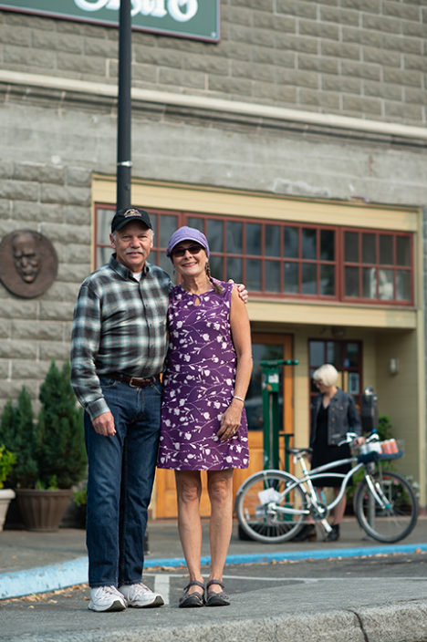

Smart Trip Employer Partners
Already a Smart Trip Employer Partner?
Welcome back! Sign in to your Smart Trips Coordinator account here.
Make a Difference
Our community benefits when people make more of their trips by walking, bicycling, sharing rides and riding the bus. Building a partnership with Smart Trips benefits your company. A worksite transportation program can help you:
- Recruit and retain skilled employees who live far from the worksite
- Create a supportive work environment and build good employee morale
- Optimize worksite and customer parking
- Maintain good relations with business and residential neighbors
- Reach sustainability goals and minimize greenhouse gas emissions
Want to become an Employer Partner?
- Benefits of Becoming an Employer Partner
- Employer Partner Best Practices
- Support for Employer Partners
- Smart Trips Coordinator Toolkit
- Are you affected by the state CTR Law?
Benefits of Being an Employer Partner
We can help you establish a worksite program that addresses worksite and environmental challenges by encouraging employees to leave their cars at home and to make Smart Trips. The Whatcom Smart Trips program offers "free services" (link to Employer Services below) to Smart Trips Employer Partners.
In exchange for these services, we only ask that you designate a Smart Trips coordinator and that you allow that person 1-2 hours per month to administer your program. (Programs for large worksites will take more administration time.)
In addition to the business benefits of running a Smart Trips employer program, you’ll also make important contributions to our community, such as:
- Reducing traffic congestion
- Supporting a transportation system that's more efficient and less costly to maintain
- Providing health benefits to individuals
- Strengthening social connections
- Creating a more vibrant business community
- Reducing greenhouse gas emissions and other types of air and water pollution
Employer Partner Best Practices
After years of working with local businesses we’ve learned what makes a business successful at being a good employer partner.
A great Smart Trips Employer Partner:
-
Has company executives who:
- Communicate about Smart Trips at least once a year to all employees
- Make and record Smart Trips at least once a month
-
Has a Smart Trips coordinator who:
- Makes and records Smart Trips at least once a month
- Participates in Smart Trips meetings
- Has completed transit training
- Has completed bicycle skills training
- Participates in Smart Trips employer events
- Promotes First Time Rider bus passes
- Uses employee transportation maps to promote Smart Trips to employees
- Displays and distributes Smart Trips promotional materials
- Includes Smart Trips information in new hire packets and training sessions
-
Invests in worksite incentives and commuting assistance including:
- Bus passes
- Reimbursements for bicycling commuting costs
- Participation prizes for Smart Trips events
- Daily incentive for not driving to work including cash incentives
- Milestone incentives for employees who have recorded a set number of trips
- Provides covered, secure bike parking

Support for Employer Partners
Whatcom Smart Trips offers free services and materials to Employer Partners and worksites affected by the Commute Trip Reduction Law. Our services are easy to use and effective. Smart Trips materials are informative, motivating, and professionally designed. To see examples of posters, brochures, and more, explore our Toolkit.
Services include:
Smart Trips website and incentives: Our prepackaged incentive program is the foundation of your worksite program. Let us motivate and reward your employees, track their Smart Trips, and enter them in prize drawings – at no charge to you.
Worksite presentations to employees: Smart Trips staff are available to make on-site presentations to groups of interested employees about walking, bicycling, sharing rides and riding the bus.
Matching prize money for promotional events: Smart Trips will match the amount of money (up to a limit of $100 per event or $50 for mid-sized employers) that companies or organizations spend on incentives to encourage their employees to try walking, bicycling, sharing rides or riding the bus. Prizes may be for Smart Trips or in-house promotions.
First time rider bus passes: Employees who have never ridden WTA buses are eligible to receive a free monthly bus pass. Smart Trips coordinators can request these on our website.
Bike to Work and School Day: This is Whatcom County’s biggest bicycling event of the year with thousands of participants. Smart Trips provides employer partners with posters and written content to promote the event.
Workshops and meetings for Smart Trips Coordinators: Smart Trips provides training opportunities for coordinators including one-on-one bike instruction, bus riding support, annual meetings and attendance to Washington State Ridesharing Organization’s yearly conference including transportation and some lodging expenses.
Are you affected by the state Commute Trip Reduction law?
Some larger employers are required to follow particular program guidelines established by the state’s Commute Trip Reduction (CTR) law. The purpose of the law is to create partnerships between local government and large employers to reduce traffic congestion, fuel consumption and air pollution. Your worksite is affected by this law if you have 100 or more full-time employees at a single worksite who are scheduled to:
- Begin their regular workday between 6:00am and 9:00am
- Work two or more weekdays, and
- Work for at least 12 consecutive months
Worksites that meet these criteria, and don’t already participate in CTR, must "notify us": Blanche@wcog.org.
In 2015, Whatcom County’s CTR Plan was updated to reflect our community’s investment in the Smart Trips program. Accordingly, Whatcom County CTR employers are expected to participate in the Smart Trips program, including the following specific expectations:
- Appoint an Employee Transportation Coordinator, know as your Smart Trips Coordinator (STC)
- Implement 60% or more of "Smart Trips Employer Partner Best Practices"
The Whatcom Smart Trips office provides Employer Services and a Toolkit to help CTR employers meet these expectations.
See the full list of participating Employer Partners here.